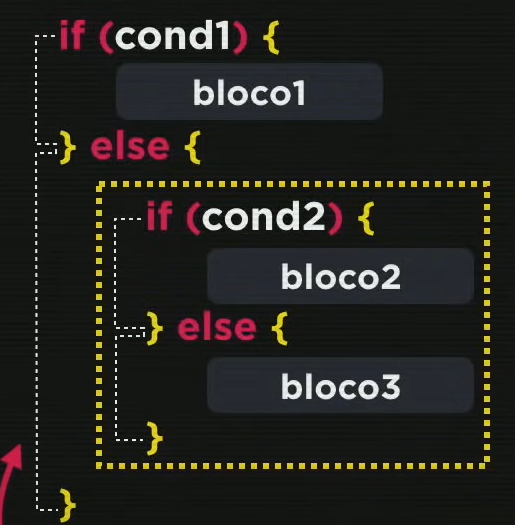
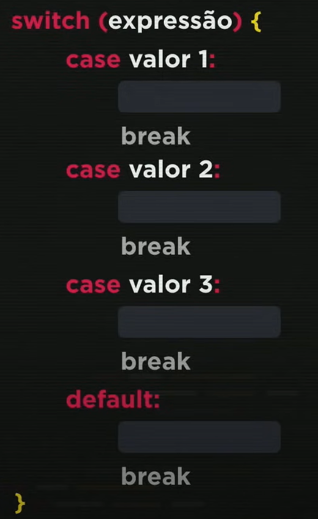

Condições
Condições simples
Para criar uma consição simples usamos o comando if e com uma consição pre detreminada.
Exemplo:
var velocidade = 80
if (var > 60) {
Você ultrapassou o limite de velocidade. MULTADO!
}
Condição composta
Para criar uma consição composta usamos o comando if e com uma consição pre detreminada, e usamos o comando else para um outro caminho.
Exemplo:
var velocidade = 80
if (var > 60) {
Você ultrapassou o limite de velocidade. MULTADO!
} else {
Você está dentro do limite permitido, parabéns!
}
Condições aninhadas
Aqui está um exemplo de condição aninhada.
Condições multiplas
Indicada para situações pontuais.

No comando switch o break é obrigatório para cada caso.
Não é recomendado usar em situações que é necessário fazer uma condição como entre um número e outro, aí é recomendadousar o if.